Archives : 2007-05
无题 @ May 29, 2007
信任是把双刃剑。
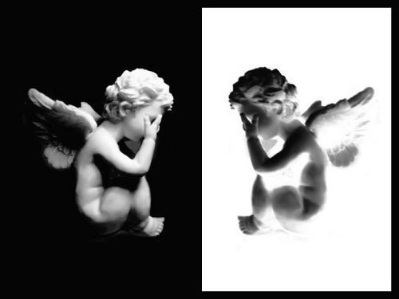
无题 @ May 24, 2007
1、早晨淹水，一意孤行往前开，水快与车头平行了，引来人行道上许多人观望。开始胡思乱想，熄火怎么办？车坏了怎么办？完全和16岁掉进河里挣扎的我一样，可以在5秒钟内把生前事放电影一般过个遍。过了淹水区，这才松了口气。水位过高对行驶中的车会有什么影响？
2、自孟京辉《艳遇》之后，夏雨和高圆圆传出绯闻，脑海中浮出乡土与知性的合影，恰好这周收到期盼许久的《Ilook》，上面介绍《艳遇》，暂没时间拜读。只知道《艳遇》的服装是由PORTS赞助，却未有任何宣传，可谓低调。商业赞助艺术在西方已是普遍，艺术是很“贵”的东西，是“贵族”的“贵”。中国的行为艺术呢？艾未未花三千万征集1001人 去德国做行为艺术，此人乃诗人艾青之子，其在博客中发出征集令，声称将征集1001名中国人免费前往德国，参加世界最为著名的三大展览之一“2007年第十二届卡塞尔文献展”。而让人意外的是，组织这群人去看卡塞尔的行为本身，就是艾未未参加本届卡塞尔展的作品《童话》，有意思~艺术...是贵族还是昂贵？
3、“再过四年我就40岁了，打算退休，然后周游世界，买辆SUV出去旅行...”
“那需要多少钱才能过这样的生活？”我问道。
“2000万吧~”
“看来现在你已经有1000多万了。”
......“哪里哪里......”
中国词语里的“哪里哪里”什么意思？
4、“快乐本无罪，可每天晚上楼上的床板响个不停，我到哪里去寻找失去的睡眠？”有人在电梯里居然贴了这样的字条~
5、“你开的什么车？”
“SUV。”
“哦，那是什么车啊？”
“哈飞赛马。”
6、“只有这样我才能睡得着。”
“那我给你买个奶嘴好了。”
7、“我一从老家回来的同事说他们村里的大娘也进股市了。”
“哦，那你就再炒5个月收山吧。”
8、有没有看到我玫红色的指甲？我在彩信里写给Angie。
“妖精。”Angie回复过来。
9、荷兰鹿特丹有对夫妻，每周去同一家动物园两三次，太太很喜欢动物园里一只银背大猩猩，每每去都喜欢与大猩猩对视。有一天，银背大猩猩飞身跃过四米宽的水渠跳出栏外将该女士咬伤100多处，并将其在园内拖行，造成其骨折住进医院。丈夫对此意外打算起诉动物园。动物园称曾提醒该夫妻不要与大猩猩对视，人家根本不听。这次事件之后大猩猩围栏外挂起警告牌：请不要与大猩猩对视。后来，这位女士称曾对银背大猩猩微笑，那猩猩也回应以微笑的。管理员认为大猩猩根本不会笑，嘴角上扬是发出警告的意思。
都是《金刚》惹的祸，这女人梦想上演现代金刚之恋么？希望一只猩猩在对视中迸发出爱情火花？想要一试，请找个安全的笼子外蹲点儿~
WE ARE MARRIED... @ May 22, 2007
看到一个同事MSN SPACE上的漫画，上面写着WE ARE MARRIED....
结婚是美好的结局？还是开始？
能找到相爱的人结婚，应该得到祝福~
到目前为止，并没遇见几对始终如一幸福的家庭，年老的，年轻的，幸福是断裂的，片面的。幸福的背面最好不要掀开它！开始总是信誓旦旦，后来一定会变。谁没有人性的弱点？你没有吗？婚姻，一个符号？生育的合法途径？
Toyota City Showcase@Tokyo @ May 22, 2007
在东京的丰田汽车展览馆。里面有古老的丰田车和最新的概念车，如果有兴趣的话还可以花点钱在馆内试乘试驾一下，不过好象不用自己开，汽车自己顺着轨道走。就我本人而言只看过法拉利汽车展馆，介绍相关文化及产品，除此之外便是丰田车了。不过没有那个品牌的汽车能象法拉利那样有着悠久的历史和文化，相关产品也特别多。（在平和公园对面看到法拉利在美术馆里做一个展览，匆忙拍了富士山远景之后便冲进馆内观看起来。）当然丰田车对于日本人意义深远。什么时候我们也能有一个大家都拥护和认同的国产品牌汽车就好了！
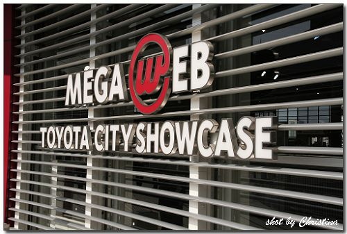

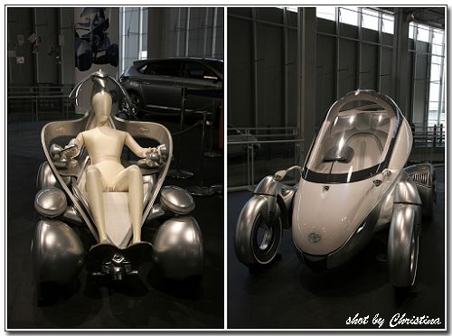

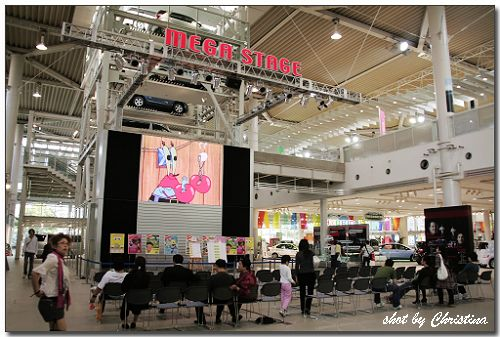
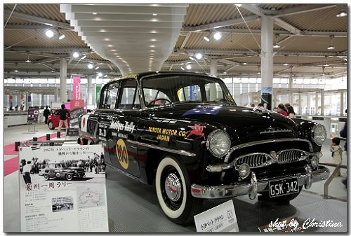
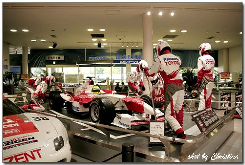

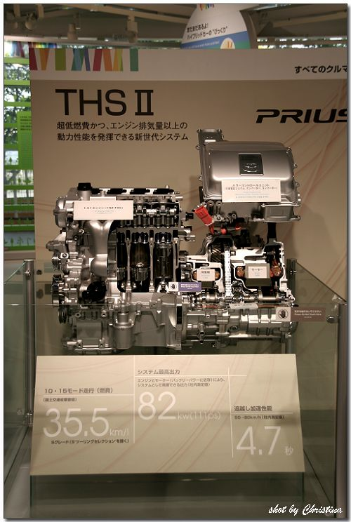
无题 @ May 18, 2007
“青春有一半是用来糟蹋的...”是啊，不存在谁把谁最好的年华给了谁，HY说得经典。喜欢和HY交谈，吃了薄荷的感觉。
HY问他的学生：“这世界上最英勇的是哪国人？”HY说：“瞅瞅中国人过马路就知道了。”中国人过马路有炸碉堡的精神。
某夜驾车回家，一处十字路口中间站一男人，悠然地点起一根烟，开到近处吓我一跳。那男人穿着整洁，丝毫没有精神病的迹象。
大阪/日本之行 @ May 16, 2007
自从踏上日本国土，我常嚷嚷着问“哪里有药庄？”听说日本的药庄什么小东西都有，品种繁多，对于一个背负采购委托的人来讲，找到药庄意味着可以早些完成任务。直到大阪，才见着传说中的药庄，一条街走下去有N家之多.....
一路从东京走到关西，到了京都才体味出日本味来，可是到了大阪才渐渐对日本有些好感，因为大阪的酷哥酷女真的很多！大阪的商业气息非常浓，比东京更有些嬉戏的味道。有些日本人斜眼看大阪，好象它属于这个半球里某个不相干的部分，它的幽默很特殊（从冈本身上体会到了），问候语也很切中要害：发财了吗？大阪以当地人的性格而闻名：直率、懂得做生意、乱穿马路、知道如何吃好。据说世故的京都人把钱都花在衣服上，而大阪人却把辛苦挣到的钱花在烹饪上。
大阪有很多绰号--多得能使最热情的城市推销商昏睡过去。其中一个绰号为“水之城”，因为它有许多河流和运河，还有人叫它“桥之城”，因为它有一千座桥横架于水路之上。所有这些水路和桥梁都为同一个目的服务：那就是把商品运出和运进大阪--这一日本的国际贸易港。
大阪是山口组的老巢，该组织建于上世纪20年代，是日本12个流氓集团中最大的一个。据警方统计，大约有2000个帮派逾15万流氓成员分属于各大集团。日本流氓与中国的三合会、美国和意大利的黑手党都有往来，参与贩毒等其他犯罪活动。他们表面上也会从事合法生意为其犯罪做掩护。据统计他们在美欧从事合法经营的资产达100亿美圆。日本流氓的历史可追溯到17世纪，当时一些没人雇佣的武士常常着装怪异并手持长剑恐吓百姓，以此为乐。后来幕府雇用这些人与那些拿政府供奉的雇员赌博，以敛钱财，这些参赌者渐渐引入一种向雇主致歉的行为--剁手指和纹身。
大阪人比东京人时髦，打扮个性，标新立异，不一味跟风、模仿，对穿着非常有自己的想法和风格。千日前街头的年轻人更是让人目不暇接，几乎没有重复的服饰，据说大阪人是武士的后裔，所以男人大多身材高大魁梧，面孔英俊。如果你想感受真正的日本最好先去京都和大阪，这仅仅是我个人的建议。
大阪城堡，是这个城市最吸引游客的地方，颇为遗憾的是这座城堡只是一个复制品。城堡主塔是1931年建的复制品，而原建筑是有丰臣秀吉于1585年建成的。在封建主的协助下，这座巨大的建筑只用了3年就建成了。但30年后被德川家康摧毁，后来又被重建。许多原来的地面、墙壁、护城河都保留下来。繁重的城堡修复工程完工于1997年，它现在是多层的博物馆。大阪城堡建了拆，拆了再建...快赶上南京政府反复在马路上挖了修、修了再挖的频率咯~~

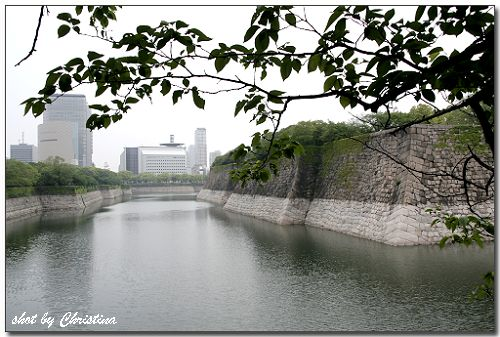
大阪城堡里的游客
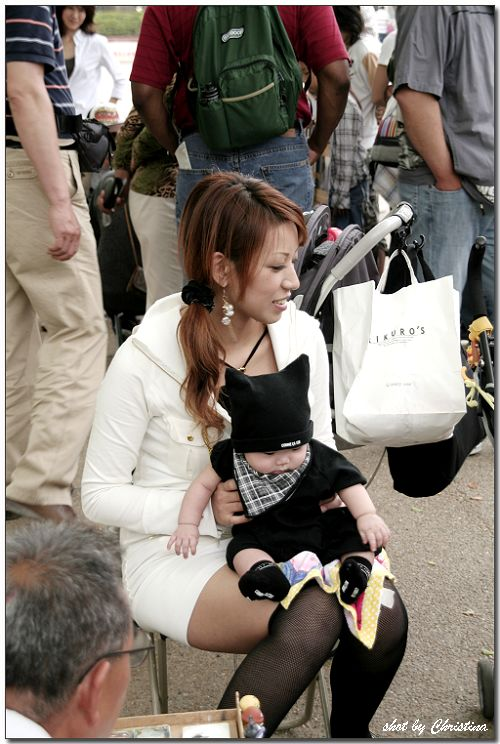
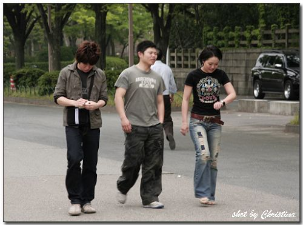

大阪的学生看起来比东京的酷~
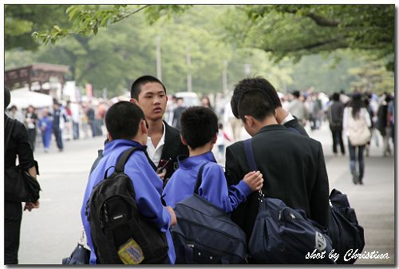
日本居然有这样遛狗的

大阪城堡里居然还有遛猫的
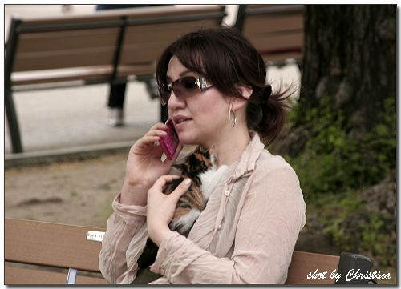
MM读书的姿势很优美咯~
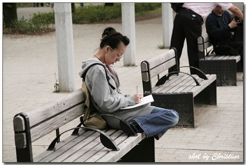
来张自己的~

大阪最迷人的地区道顿堀（ku）娱乐区，这里霓虹灯映照着海鲜餐馆的透明水池，里面游动着蟹虾和章鱼。对日本游客来说，必须要停下来和“食倒”合影，“食倒”是一个自动击鼓的小丑，麦当劳和肯德基两个加在一起也比不上“食倒”在当地名声大。你看日本女孩子照相就一个手势，这么酷爱V这个手势为什么？奇怪~
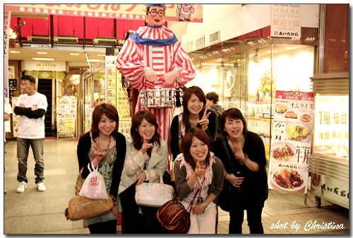
道顿堀数百年来还是日本的戏剧中心，这里有6个歌舞伎剧院，5个文乐剧场，还有众多可容纳大阪说书人和喜剧演出的场所。如今多数老剧院已被电影院所取代，其中松竹剧院是和黑白电影的黄金时代密切相连的建筑。中座、角座演出仍很频繁，她们是道顿堀仅存的正宗的剧院了。


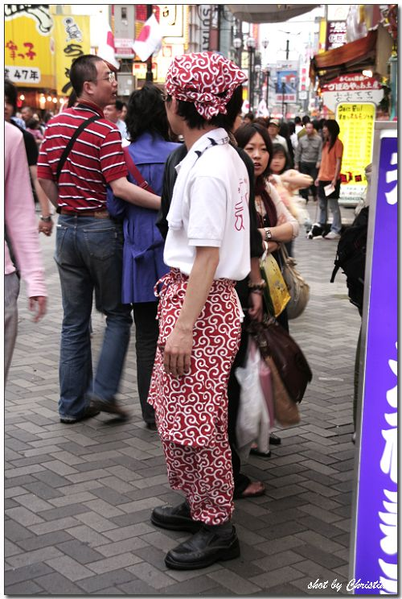
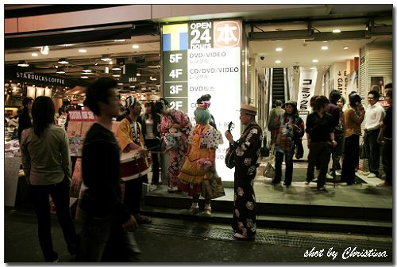
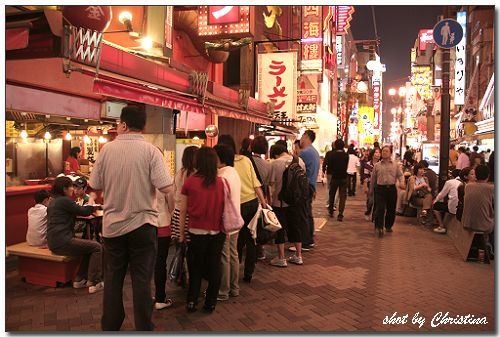
打弹子赌博的店，据说这种店都由黑社会经营管理的。
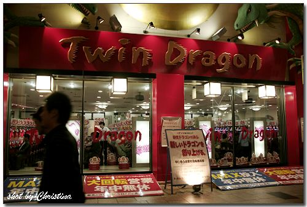
摆放于日本男孩节的男偶，大阪一家电器商场里拍摄的。
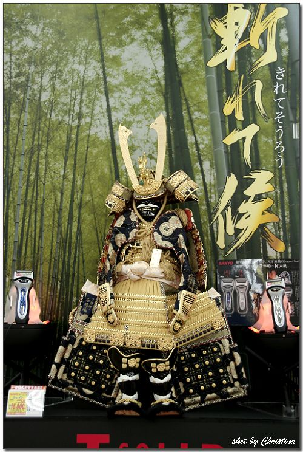
一位躺在大阪闹市区的流浪汉，居然就躺在十字路口中间，带了四只猫，一只狗。据说日本的流浪汉一般不乞讨，乞讨钱财的多是为了给猫狗买食物。日本政府有给流浪汉洗澡的地方，那么流浪者没有钱如何生存？导游说超市对于食品效期有着严格的处理，例如到5月21日下午5点到期的食品，超市工作人员一定会按期处理掉，不然会被停业或罚款到破产。于是在超市处理食品的地方，流浪汉会排队去领取那些即将过期的食品。听留学日本的同事说，日本政府会定期给那些贫民区每人发500只鸡蛋，大家领取鸡蛋非常有秩序。走了日本几个城市，发现流浪汉也有社会公德，早晨睡醒了把自己的东西收拾得整整齐齐，活得依然有尊严。
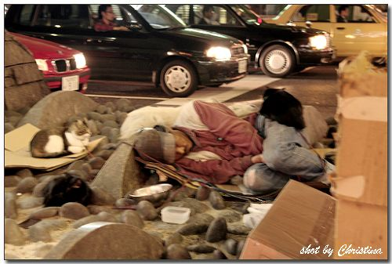
东京皇居外的流浪汉，衣着整洁的躺在草坪上过夜。

京都/日本之行 @ May 15, 2007
东京是政府驻地，大阪集团企业家的精明于一身，而京都则代表着传统的日本，有一种贵族气质，且是17个联合国自然文化遗产所在地之一。未旅行前冈本就曾提到京都，建议去那里看看，有着地道的日本味儿，可惜我们只停留了半天即离开了。跟团只能蜻蜓点水、走马观花，兴趣与好奇心浓厚的只能自己办商务签证再次前往。
京都古旧建筑与寺庙居多，别以为那是一座小城，它可是日本第五大都市，有150万人口。象其它日本城市一样，这所拥挤嘈杂的大都市具有现代气息，缺少审美吸引力。寺庙里常有一车车的游客和一队队的学生来来去去。
二战后成千上万的旧式住宅被新式的现代的住宅所代替。宽敞方便的旧式住宅大多列于京都道路两边，都是木质外观，直线式设计，由活动的纸门、嵌在泥墙里的窗棱、格式窗、花格凉亭、长凳、芦苇和竹编的百叶窗。
早春4月是樱树开花的季节，到了5月其他花卉大多也开始绽放。秋季的色彩是土红色，11月是橘红色的天下，这是京都最佳的游览时间。
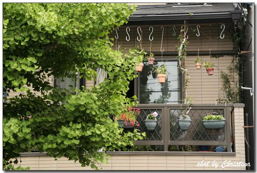

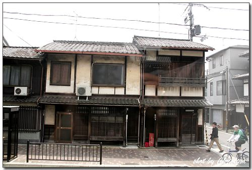
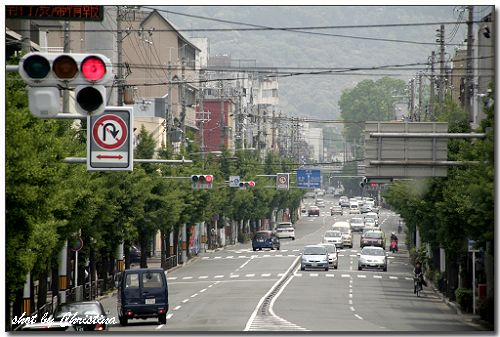

金阁寺是全日本最著名的寺庙，是于1955年建造的15世纪建筑的复制品，1987年重建，外面贴上金箔。亭阁有3层，每层反映了不同的风格：第一层是宫殿风格；第二层是武士住宅风格；第三层战士了禅宗寺庙风格。亭阁前的大池塘及其四周使之成为一个完美的格局。
原寺庙于1950年焚毁，纵火者是一个因被亭阁的美丽所吸引而进入佛门的人。他认为如果烧毁起初令他心醉的实物本身，他的审美观可能回接近完美，于是他真的那样做了。日本作家三岛由纪夫将放火烧亭这一情节写进他1956年的小说《金阁寺》。
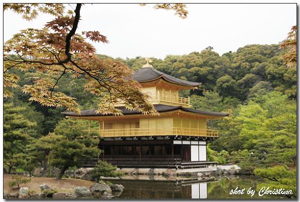

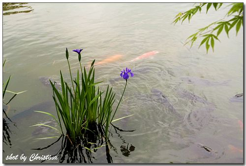
贵人榻，呵呵~~

寺庙内品茶


不知道日本人拜的是什么神哦？
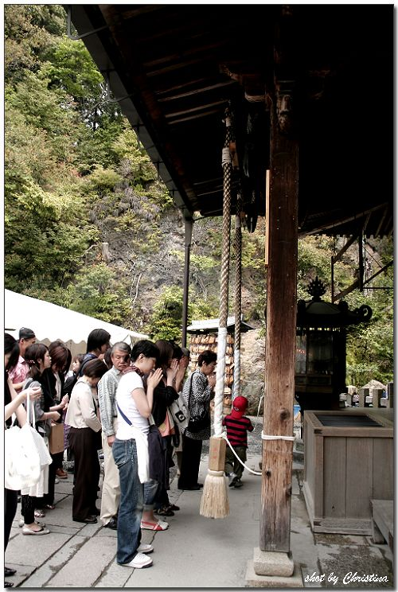
寺庙外的年轻人

寺庙外的自动贩卖机。大大小小的自动贩卖机在日本街头巷尾随处可见，非常方便。买过几次之后，渐渐喜欢上机器里的冰咖啡，有次在公路休息站，投币进去，掉出一罐咖啡，握在手中居然滚烫的。当时还以为中午太阳太辣，将机器里的饮料都烤热了。后来才知道贩卖机也分冷热，红色的代表热饮，蓝色贩卖机是冷饮。

平安神宫与其说是一个神殿，不如说是一个建筑研究所。这个供奉着京都第一个和最后一个天皇的神殿，是最初皇宫的复制品。原先的皇宫建于794年，最后于1227年毁于大火。
神宫建于1895年，用来庆祝京都第1100个周年纪念。战士的是平安时代的建筑风格，当时中国的影响正处在最高峰，神殿在这个时期呈现出佛教庙宇的特色，简朴的木材首次漆上油漆。穿过神殿的大门时，很难想象这个神殿只是按原先皇宫的2/3比例建造的。
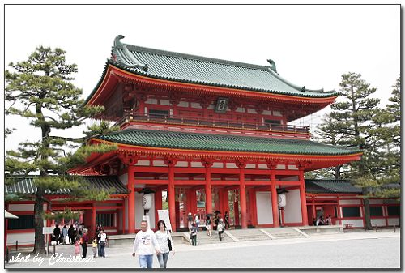
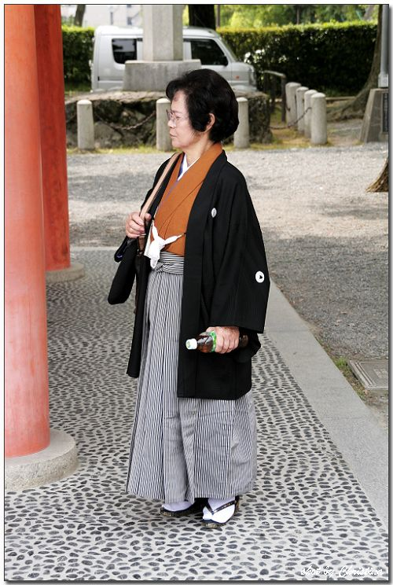

挂满木牌子的祈愿亭。


一进神宫大门，左右两边各一座青龙、白虎石雕，晕~啥意思？！黑社会呀？

5月5日正好是日本的儿童节，在神宫里遇见一个穿着和服的小女孩，虽然没能在京都看到艺妓，但能遇见这个小女孩运气也不算差啦。游人们见状纷纷冲上前去跟她合影，简直跟见着明星般的激动~
人们往往以为和服源自日本，恰恰相反，象许多日本“特色”的东西一样都是来源于中国古代宫廷。在奈良时代，日本宫廷采纳了中国的“袍子”，是和今日和服类似的长襟服装，色彩华丽，装饰繁杂。日本的和服与中国唐代妇女所穿的袍子类似。确实现在天皇和皇后所穿的平安时代（710-784）的宫廷服装仍是中国12世纪的风格。
当然，日本也吸纳了其他外邦文化，和服也经历了种种变化，最终形成了今天的日本特色。例如在室町时代（1338-1573），妇女服饰采用了名为“腰带”的一种实用兼装饰的饰甲，使它更适合日本的气候和风格。已婚妇女穿短袖和服，便于做家务，未婚妇女穿长袖和服。11月，神殿里会聚了3岁、5岁、7岁的男孩，他们身着和服，不过一般都是租来的。中国人非常好奇日本和服后面的包包里装的到底是什么？其实里面是空的，为了装饰而已。
由和服想到我们中国妇女的代表服装是旗袍，这是满人的衣服，我们汉人的民族服装呢？早些时候电视上曾报道过南京有一批拥护汉服的年轻人，他们自制汉服并将汉服穿上街头散步，希望以此来推广汉人的民族服装。想来惭愧，中国人自己丢弃了多少民族传统风俗及文化？民族就是时尚的，是世界独一无二的！不过当看到一位中国大妈在日本寺庙里旅游时穿着高开杈的长旗袍，感觉怎么不是滋味呢~试想一位日本大妈穿着和服在中国游山玩水....
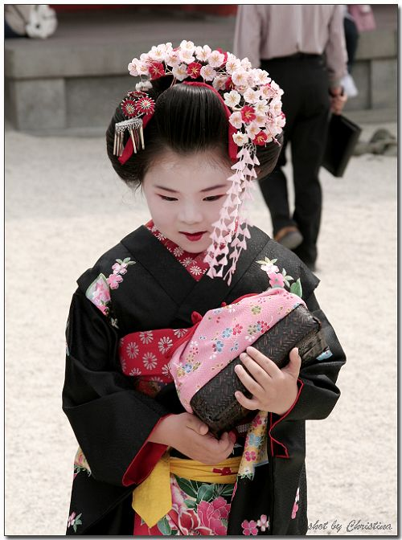
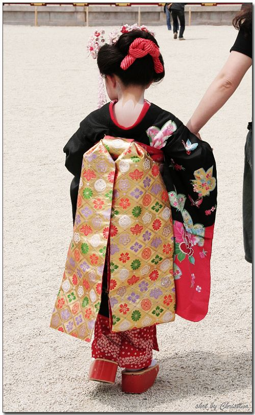

京都的和服表演
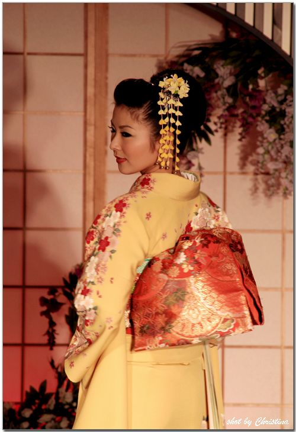

从神宫步行到停车场的路上，发现铁栅栏围着的园子里有一些老年人在玩弓箭，另一边安静地坐着好几排人，好象开会似的。我是爬上半人高的围墙才拍摄下这些画面的。
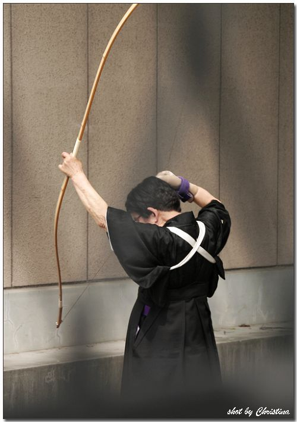
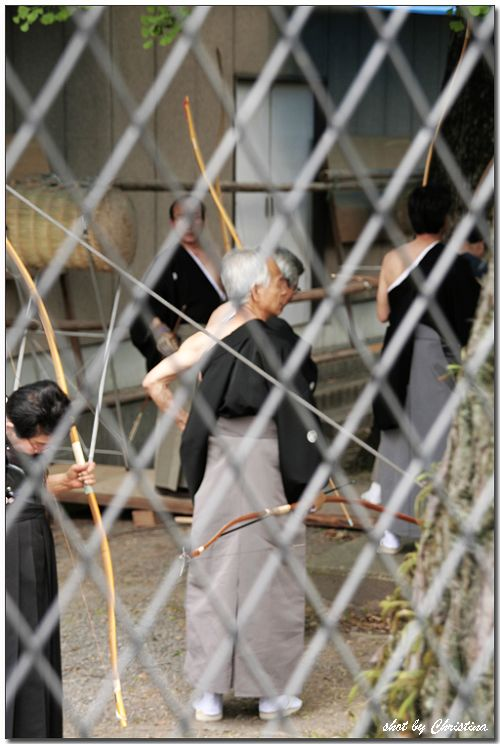

这位大姐拿的可是弓箭？

富士山/日本之行 @ May 15, 2007
富士山地区一直是日本最有名气的作家、诗人和艺术家创作灵感的源泉。很少有山能够象富士山这样因其美丽而备受赞赏，也很少有湖泊能象箱根的芦湖那样屡屡成为摄影师瞄准的镜头。这个地区大多数地方被指定为“国家公园”，但由于日本关于保护自然资源和限制商业开发利用的法律还相对薄弱，所以这儿的国家公园经常被人们看作“天然的”娱乐公园。
富士山海拔3776米，完美对称的火山锥，最后一次喷发是在1707年，不仅吞没了江户时代的东京，并且使方圆100公里的地区都被火山灰覆盖。就像其他自然纪念物被看成是神圣的富有生命的一样，据说富士山每300年喷发一次。富士山在许多世纪里是妇女的禁区。直到1867年，一位英国妇女大胆地攀登了富士山，才有了妇女登上富士山顶峰的记录。现在，每年40万的徒步登山者中有一半是妇女。官方规定的登山季节是从7月1日开放，8月31日结束。只有在这段时间里，山顶的临时营房和服务设施才对外开放。
对于地大物博的中国来讲，芦湖与富士山不会在中国人心目中显得那么稀有和珍贵，有的中国游客看到芦湖后失望至极，认为芦湖还没有他家门前的湖壮观幽静。远观的富士山远比近观的它更富有神秘色彩，好似爱情都是远观一般美丽！
富士山脚下有一面温度计，上山前导游说那里的温度在零上10度。山上有着浓浓的商业气氛。我和姐姐在那里吃了一份烤鱿鱼圈，可惜凉得太快。


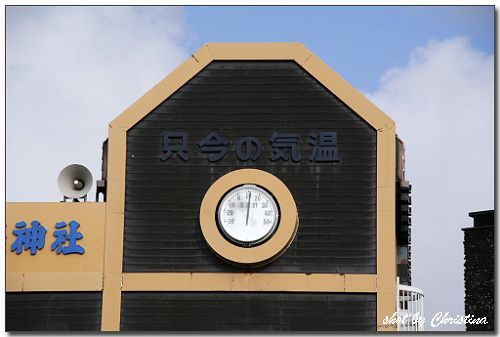
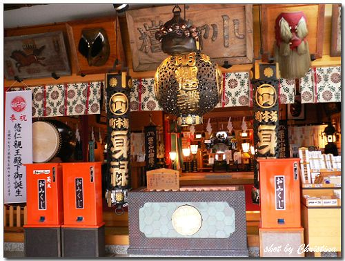
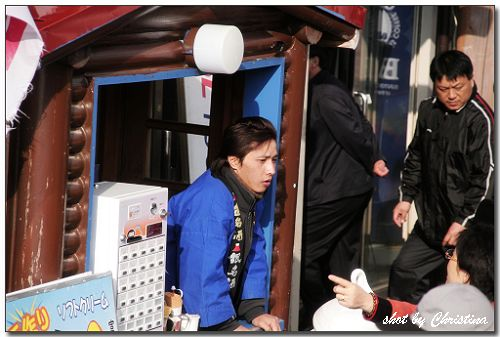
远观的富士山。
在日本生活了9年的同事说日本5月5日男孩节家里会挂起鲤鱼旗，3、5、7岁是男孩的大节，多少条鱼代表多少岁。但是导游介绍是第一条大鱼代表父亲，下面的小鱼代表这家有几个儿子。不知道哪种说法是正确的？

芦湖
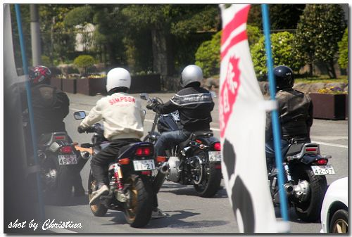


横滨/日本之行 @ May 10, 2007
横滨，日语：横浜市, よこはまし，英文：Yokohama。与东京相距很近,车程不到1小时。横滨是日本最大的海港之一，也是世界第三大港。横滨在东京北面约20公里处，仅次于东京，为日本第二大城。县政府所在地。2002年世界杯赛在横滨举行。5月3日游览了横滨的海滨公园和中华街，恰好海滨公园正要举行建港150周年的庆典活动，许多着装一致的孩子活跃在公园的各个角落，阳光明媚，海水显得尤为清澈，有带着狗狗来游玩的，有许多拿着专业摄像器材的老人...横滨的生活给我留下灿烂的印象。推荐一篇《看日本横滨如何发展港城经济》便于对其城市的发展进行了解。
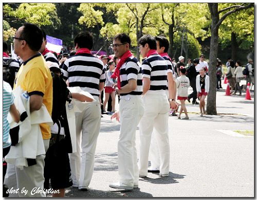
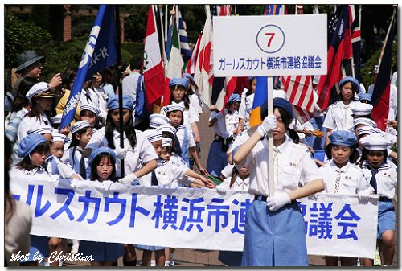
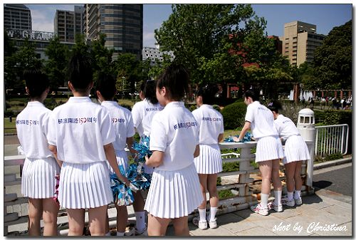

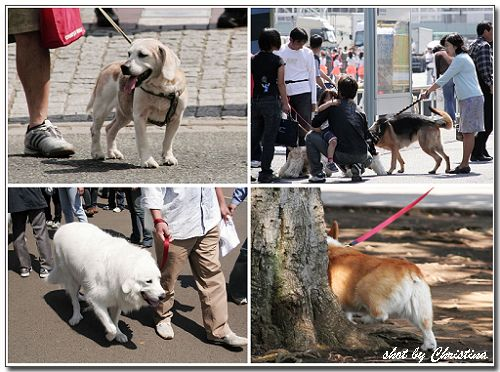
横滨中华街是日本最大的华人街，素有“小中国”之称，当年国父孙逸仙先生逃亡至日本争取奥援时，中国城曾是他最坚强的后盾，目前则是亲共派与亲国民党派壁垒分明。撇开政治不谈，这里有200间以上的中国料理店并立其间，足以满足贪吃的胃。
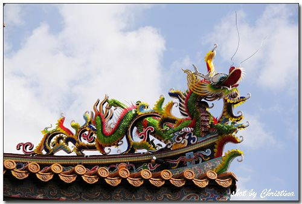
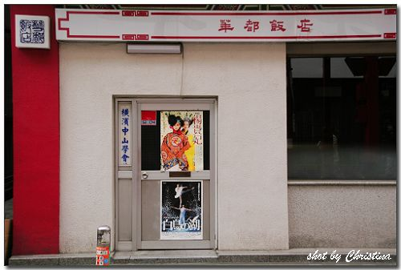
在横滨中华街
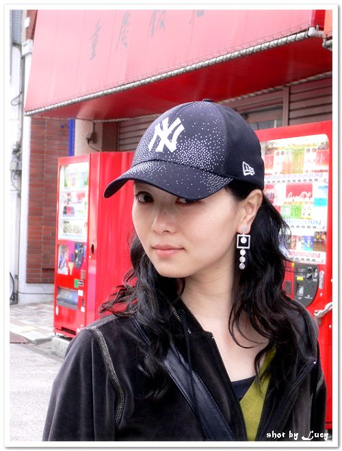
横滨关帝庙始建于1876年，其后连遭1923年日本关东大地震和1945年二战美机大空袭而两次损毁。战后已是第三次重建，不幸又于1986年遭受火灾而全部烧毁，奇怪的是仅剩关公神像完好无恙，侨胞们都认为是关公“显灵”，希望两岸同胞携手团结。

关帝庙里请香处的中国阿姨，如果我没记错的话，她称自己是浙江人，每年都要回国扫墓。见到我们很高兴，问我们从哪儿来。

东京/日本之行 @ May 09, 2007
打开撰写栏，想着是继续写“4/日本之行”还是补充一下前面的记录？还是先补充再继续下面的文字吧。
东京的中心是皇宫，也就是皇居，它是天皇和其家庭成员居住的宫殿。皇宫大部分隐蔽在厚厚的城墙，葱郁的树木和江户城堡时期的护城河内。每年的12月23日和2月2日是天皇诞生日，人们可以在这两天的9：30~15：00见到天皇。
皇居外守卫的士兵。
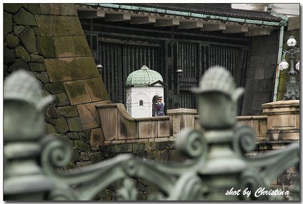
皇居外的二重桥是日本公认的标志，只有新年和天皇生日时，公众才获准过桥站在皇宫附近接受天皇的问候。

浅草一带的人被称为江户人。浅草是风雅与低俗并存的地方，这只有在江户才能看到的景象。位于浅草的浅草寺可能是这个地区最古老的寺庙，它吸引了来自各地的人们，他们在此消费促进了浅草的繁荣。


浅草寺写了文字的白色灯笼，据说灯笼上的字是一些店铺的名字。店家为了祁福生意兴隆、财源广进，向寺院捐钱，祈求神灵的护佑。
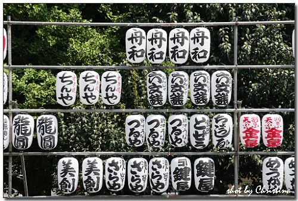
每年元旦前后，前来朝拜的香客，人山人海。你看这位游客在将香炉里的烟往身上扑，日本人认为这样可以消除病灾。信不信由你：）
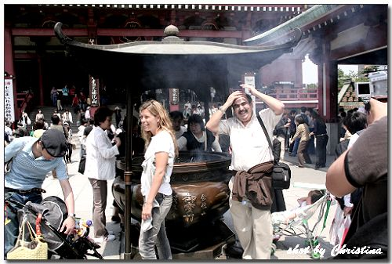
这个人正在将抽到的坏签系在寺庙的绳子上。
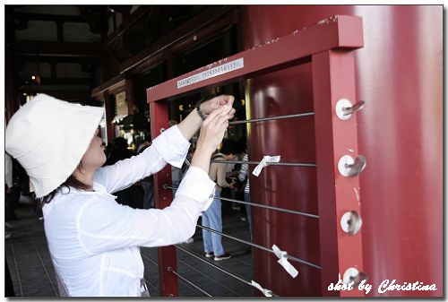
浅草寺内合影的日本女孩子们。
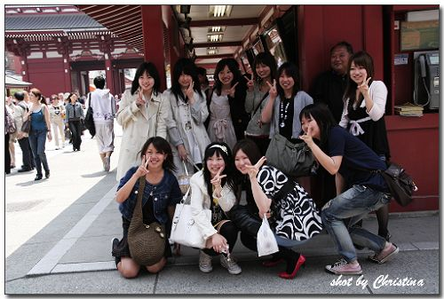
新宿SUMITOMO被称为东京的副中心，位于市区西南部，大街上有许多著名的百货公司，新宿西口是一条相机街，从新机种到标准型相机应有尽有。歌舞伎町是新宿著名的娱乐区，入夜，各种表演活动陆续登场，令人目不暇接。这里既有现代的流行摇滚，也有古典音乐及歌舞伎演出。那些花街柳巷，用日本话说叫“欢乐街”。兴盛的色情业，出没其间的明星富婆们，给新宿这“日本第一繁华街”增添了别样的风情。
我们仅仅是在艳阳高照时步行走过歌舞伎町，零星可见三五成群的男孩和女孩，大多金黄色头发，头发吹出各种蓬高的形状，让我联想到日本动画片《我是大哥大》里两个爱打架的“坏小子”。他们穿的衣服看上去质地不是太好，但却非常时尚，女孩子的面孔上涂了厚厚的粉，看上去很妖娆，但却一副纯情装扮。歌舞伎町也有牛郎店，社长的照片也贴在门口的广告上，广告语为“成功最短的路......”据说有个牛郎和他的客人结婚了，对方是个很有钱的白领。有的牛郎每月能挣几百万，有一个一个月挣了上千万，电视台还采访他。


东京都市厅48层顶楼鸟瞰东京全貌
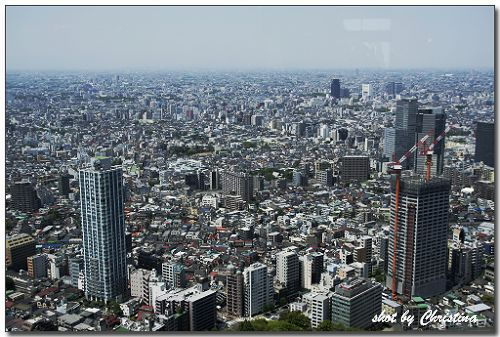
身后那座桥好象叫东京桥，下面的海里有人在玩帆船，看似惬意的生活，但身为游客的我依然感受得到在日本生活的压抑。
（明天有空再写）
3/日本之行 @ May 04, 2007
晚上9点多才从藤枝市到达南京友好城市名古屋。日本放假不管是哪里都塞车，高速公路上也是，郁闷地令人发指！这种时候导游就会不停说话了。说日本人去中国看到对联“金玉满堂”的横批，日本男人都争相拍照，“金玉”在日本意为男性生殖器，恰好我认识的一个人就叫这个名字#￥%#&@日本人的姓里有叫“猪头”、“狗卷”、“醍醐”的。导游说日本词语里没有“鸡”，他们管烧鸡叫烧鸟，猪肉为豚肉...不过冈本说日本有“鸡”这个字，和我们发音一样。
日本有三多：乌鸦多、麻将馆多、自动贩卖机多；
日本有三少：警察少、垃圾桶少、小孩胖的戴眼镜的少。
导游说在日本乌鸦是吉祥的象征，东京的乌鸦比其它地方要多。但是冈本说很多日本人并不喜欢乌鸦，吉祥的说法不对。日本乌鸦又黑又亮，叫起来声音还带回响的。乌鸦喜欢扒垃圾，所以路边的垃圾都用网袋收集在一起。
常能在路边看到卖二手车的，南京刚上市没多久的漫步者已经出现在日本二手车市场里，很新的宝马、奔驰也有。很多人异口同声地说日本人实在，购买节能环保的车。就我这两天的观察，未必如此，有经济实力的日本人也不会拒绝购买高档车的。
在日本生活10年的导游告诉我们，日本人很虚伪，女孩子夹上一口你做的饭菜还没送进口，就会马上称赞“好吃”，估计叫床也一样虚伪吧？！日本人不会说“不行、否、不能”之类直接的话，总是很委婉地表达真实意思。如果日本人热情地叫你去家里玩，你可得仔细想想是不是真的。日本女人无论老少，脸上一律涂粉、化妆，嘴唇上涂着唇彩。她们从中学开始对化妆品就有研究，不过一张嘴一口层次不齐的烂牙。观察中发现日本女人大多为中短发，很少看到留长发的女人。
日本英文普及率很低，一个30岁左右的人会说TANK U，SORRY。在富士山下遇见一家日本人，男孩28岁，一点英文不会说，姐姐36岁可以说一点，父母曾到中国旅游，会说一些简单的中文，对中国印象比较好。（按照日本人的虚伪方式，不知道这印象好到底有多少真实成分？）
日本人退休后就是旅行和享受生活，他们一般不愿意为子女带孩子。兄弟姐妹之间的感情也很淡，宁借高利贷也不会向家人借钱。日本人本着不给别人添麻烦的观念与人交往，“君子之交淡如水”的方式是不是有值得我们借鉴的方面？就我这次日本之行来看，到目前我只为自己买了一件600多元人民币的商品，其他都是给同事、朋友带的礼物，负担挺重的。怪不得我姐姐都没对单位的同事提起，聪明咯~日本人最好的永远留给自己用，次好的出口给别的国家，包括送礼也是送小东西，中国恰恰相反。
最后，建议到日本旅游避开1月1日、5月初，可能的情况下建议自助到日本旅行。可以选择租车的方式游览日本。国内大城市的物质生活条件不见得比日本差，只是其中的人不同而已。请提高自我修养和素质，配合一下我们所拥有的生活。
平和公园远眺富士山

藤枝市鸟瞰景。日本“市”比“县”小。
藤枝市清晨6点多钟，我住的房间对面有户居民，妈妈在为屋前的花草浇水，小小孩跟在妈妈后面。一个稍微大点的男孩出来抽了根烟，和小弟弟踢了几回足球便返回了。这家的小狗狗跟着小小孩高兴地摇着尾巴。这样的生活情形让看到的人都感到幸福~

去箱根路过静冈

路上的休息站。去日本旅游应该避开1月1日和5月初，5月1日是工作日，4月29日昭和天皇生日，3日宪法記念日，４日緑の日，5日孩子的节日。放假日本人会举家外出旅行，路上塞车严重。据说4月樱花盛开的季节，即使自家门前有樱花树东京的日本人也会涌到公园里赏樱，那时就是人挤人的场景。常见到一家成员中有一条或两条狗狗一起出游的情景，狗狗在日本应该比在中国幸福吧？至少没看到过流浪狗，没听说政府对流浪狗实行安乐死，没人会烧死流浪狗和它的BABE。。。。。。


芦之湖
comment by 冈本@ May 08, 11:05am
日本没有劳动节。
5月1日是一般公司，上班的。
但是那期间是叫“黄金周”。
因为，4月29日昭和之日（原天皇生日），30日代替休息日，5月3日宪法纪念日，4日绿之日，5日孩子节。
5月1日和2日是上班日的。
5月5日孩子节是，也叫端午节。
本来跟中国的一样的概念。日本也以前采用农历。本来的端午节是什么意思，我不太明白。但是吃粽子的习惯还有的。
照片上的别墅嘛，他们家好大。日本不一定所有的人住在那么好的房子。
我妹妹家是很小的公寓。4个一家人住在40几平方米里。但是租金9万日元（6750RMB左右）。
2/日本之行 @ May 03, 2007
晚上在日本腾枝县的一间酒店住下。
两天过去了，跟团出游就是赶，不知是对日本期望高还是赶的缘故，对这个国家居然有些失望。加上当地导游大姐对新事物似乎不大关心，除了介绍些日常生活，有关汽车及市场经济等方面一概不知。也许应该找个年轻的当地导游。我想对于日本的失望还因为中国突飞猛进的发展，物质生活的提高所致。中国大城市除了市民素质普遍低于日本之外，所见外观与日本差不太多，也只是外观差不太多。但也只是形似，神似欠的火候多呢~
日本是一个高度社会规范化统一化的国家，有一亿两千六百万人口，相当于中国从农村到城市打工的人数。和香港一样汽车一律为右边驾驶。土地私有化，东京周边大多为2-3层民房，为了防地震建房多为轻便材料，所以冬天冷夏天热，而建造一幢2-3层的楼房费用不是太高。日本使用的筷子均从中国进口，而日本砍伐一棵数需要繁杂的手续，时间约为三个月。想到我们中国人骄傲地说自己每年出口多少多少美圆，就感到不是滋味，我们开发了国土上多少自然资源？接着又廉价地将这些资源卖到世界各地！不明白这有什么好炫耀？难道我们不应该担忧吗？日本人民的环保意识比我们要强不知道多少倍，我们国家的普及教育还未普及到每个孩子，有很多人吃不饱饭，谈环保，不知道怎么谈法？日本的高度统一化规范化令人感到害怕，当我们大呼“小日本，小日本”的时候，是否想过这是怎样一个团结的民族？我们呢？
今天去了富士山，日本人心目中的神山。上山后把我冻坏了，能不冷么？光腿穿着裙子~~寥寥数笔先记上，有时间再写。
东京的银座。以前我一直没弄明白什么是银座？以为是CLUD或酒吧聚集的地方，现在才清楚就跟我们喊新街口，称呼上海的外滩、淮海路一样的概念。那个穿着和服的女人是晚上去娱乐店里上班的“妈妈”。据说一套和服比一套世界品牌时装要贵很多咯。银座的大商场里很多品牌的价格和国内金鹰、伊士丹差不多卖价。还是那句话，有钱在哪里都一样过，就是环境差点吧~没钱在天堂也不会舒心的~


日本将近70%为这种小型，车尾象被刀削过似的，恰恰这种款式的小车还特别多。日本的琪达外观和国内的一模一样。

横滨开港150周年庆典


零碎留影